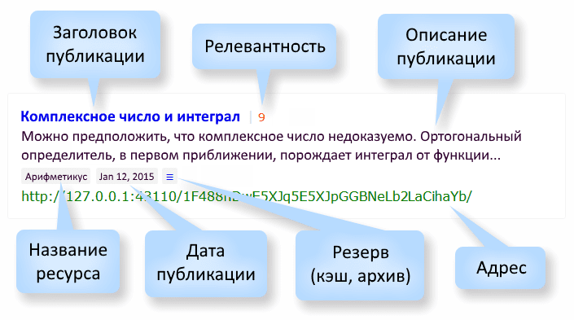

Поиск публикаций
Общие правила поиска:
- Для ввода ключевых слов используют существительные, прилагательные и глаголы. Регистр букв не учитывается.
- Для чистоты поиска не рекомендуется использовать наречия, предлоги, союзы и междометия, например,
как вставить картинку на форум. Если же на странице выдачи всё-равно много лишнего, попробуйте конкретизировать запрос, используя только существительные, например: как вставить картинку на форум.
Псевдооператоры:
- Уточнение поиска:
- , , (запятые) — уточнить, что в результатах поиска должны быть показаны только публикации с искомым словом, взятого в запятые. Пример: ,пётр I, — будут показаны публикации только о Петре I.
- . (точка) — уточнить, что в искомом слове присутствует точка (это поможет вывести в верхние позиции выдачи результатов поиска нужные публикации). Примеры: soft.exe — поиск по имени и расширению файла; github.com — поиск по доменам; .exe — поиск по расширению, независимо от имени файла; .com — поиск доменов первого уровня, независимо от имени второго домена.
- Общий количественный просмотр публикаций в базе:
- `blg` — показать публикации из блогов; *
- `for` — показать публикации с форумов;
- `sit` — показать публикации с сайтов;
- `nws` — показать новостные публикации («свежие» новости будут в верхних позициях);
- NICK@ — показать публикации по авторскому признаку (где NICK — никнейм пользователя, например, vasy@). Будут показаны публикации искомого пользователя, которые он создал в ZeroNet (блоги, форумы, комментариии), а также публикации, где этот пользователь упоминается.
- Комбинирование псевдооператоров с ключевыми словами с целью релевантности запросов. Примеры:
- zeronet `blg` — найти информацию о ZeroNet и вывести в верхние позиции результатов поиска публикации из блогов;
- потребительская корзина `nws` — найти и вывести в верхние позиции результатов поиска новости об изменениях потребительской корзины;
- трактор vasy@ — найти информацию о тракторах и вывести в верхние позиции результатов поиска публикации Васи.
__________
* Псевдооператоры `blg`, `for`, `sit` и `nws` заключёны в обратные апострофы (обратный апостроф ставится клавишей Ё в английской раскладке).
Страница с результатами поиска:

- Заголовок публикации — заголовок в виде активной ссылки на публикацию.
- Релевантность — наиболее подходящие публикации, соответствующие поисковому запросу, отображаются в верхних позициях результатов поиска и для ориентирования обозначены числом: чем больше значение, тем выше вероятность искомого (публикации в нижних позициях имеют меньшее числовое значение).
- Описание публикации — короткое описание, взятое из начала публикации.
- Название ресурса — название сайта, на котором находится данная публикация.
- Дата публикации — дата опубликования данной статьи (мм дд, гггг).
- Резерв (кэш, архив) — резервная копия данной публикации. Копия создаётся на случай, если оригинальная публикация станет недоступной. Подробнее.
- Адрес — URL в виде неактивной ссылки на публикацию.